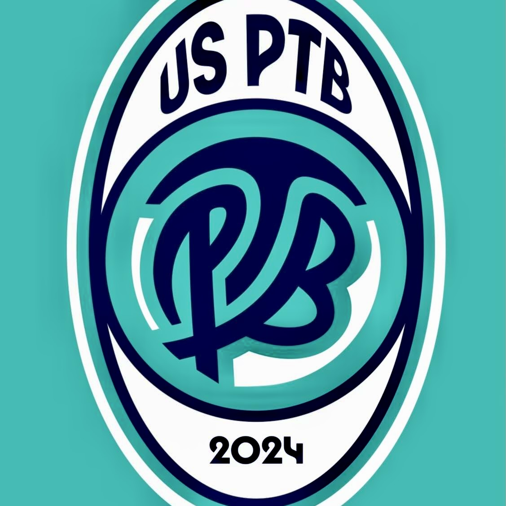

Actualités du club
Retrouvez les annonces et événements dans la rubrique Actualités.

Site de présentation du club

Photo illustrative libre de droits — à remplacer par une photo du club
Retrouvez les équipes, les actualités et les compétitions de l'Union Sportive Patriote Terregatte Beuvron.
Les calendriers, résultats et classements doivent être vérifiés auprès des sources officielles avant publication.
Retrouvez les annonces et événements dans la rubrique Actualités.
Seniors 1 en D1 Poule B, réserves, jeunes et féminines. Encadrement et effectifs à compléter.
Les calendriers et résultats doivent être actualisés depuis une source officielle.